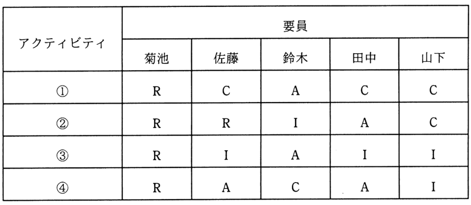

表は，RACIチャートを用いた，ある組織の責任分担マトリックスである。条件を満たすように責任分担を見直すとき，適切なものはどれか。
〔条件〕
・各アクティビティにおいて，実行責任者は1人以上とする。
・各アクティビティにおいて，説明責任者は1人とする。

ア アクティビティ①の菊池の責任をIに変更
イ アクティビティ②の佐藤の責任をAに変更
ウ アクティビティ③の鈴木の責任をCに変更
エ アクティビティ④の田中の責任をRに変更